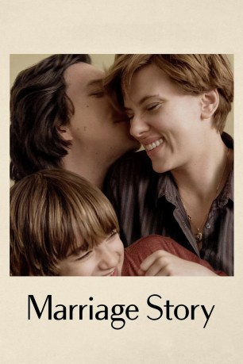
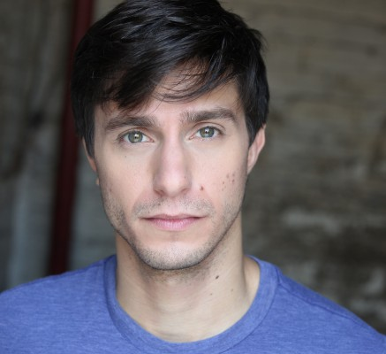
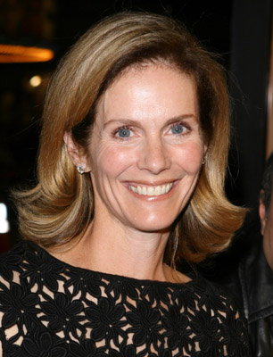

#12183 Marriage Story
 
 IMDB-Wertung: 8.2 / 10
IMDB-Wertung: 8.2 / 10  IMDB-TOP-Platzierung: 161
IMDB-TOP-Platzierung: 161  Tomatometer: 95
Tomatometer: 95  Metascore: 93
Metascore: 93 
Dieses eindringliche und mitfühlende Portät einer Familie, die trotz einer zerrütteten Ehe zusammenzuhalten versucht, kommt von dem für den Oscar nominierten Filmemacher Noah Baumann und überzeugt mit Scarlett Johansson, Adam Driver, Laura Dern, Alan Alda und Ray Liotta.
Jahr: 2019
Dauer: 136 Minuten
FSK: 6
Land: England Studio: NetflixTonspuren: - , - , - , - , - ,
Untertitel: Deutsch, Englisch, , Französisch, ,
Auflösung: 1080p (1920x1080) Größe: 8386 MB
Genre: Drama, Komödie, Liebe
Regisseur: Noah Baumbach
Drehbuch: Noah Baumbach
Soundtrack: Randy Newman
Darsteller:
 Adam Driver als Charlie
Adam Driver als Charlie Scarlett Johansson als Nicole
Scarlett Johansson als Nicole- Julia Greer als Street Solicitor #1
- Azhy Robertson als Henry Barber
 Wallace Shawn als Frank
Wallace Shawn als Frank Matthew Maher als Theater Actor
Matthew Maher als Theater Actor Mickey Sumner als Beth
Mickey Sumner als Beth- David Turner als Theater Actor
-  Gideon Glick als Theater Actor
- Jasmine Cephas Jones als Theater Actor
- Motell Gyn Foster als Theatre Actor
- Raymond J. Lee als Theater Actor
- Mary Wiseman als Theater Actor
- Pete Simpson als Theater Actor
- Irene Choi als Theater Actor
 Matthew Shear als Terry
Matthew Shear als Terry- Becca Blackwell als Theater Actor
 Brooke Bloom als Mary Ann
Brooke Bloom als Mary Ann- Hannah Dunne als Agnes
- McKinley Belcher III als Lighting Designer
 Roslyn Ruff als Donna
Roslyn Ruff als Donna Robert Smigel als Mediator
Robert Smigel als Mediator- Amanda Rovner als Babysitter
-  Julie Hagerty als Sandra
- Sarah Jones als Carol
 Carlos Jacott als TV Show Producer
Carlos Jacott als TV Show Producer- Bashir Salahuddin als Director
- Vinny Chhibber als VFX Guy
 Mark O'Brien als Carter Mitchum
Mark O'Brien als Carter Mitchum Ayden Mayeri als Makeup Artist
Ayden Mayeri als Makeup Artist- Erin Evans als Wardrobe Assistant
- Lucas Neff als Pablo (Grip)
 Laura Dern als Nora Fanshaw
Laura Dern als Nora Fanshaw- Annie Hamilton als Becca
- Tunde Adebimpe als Sam
- Jordyn Curet als Molly
- Justin Claiborne als Jules
 Merritt Wever als Cassie
Merritt Wever als Cassie Ray Liotta als Jay Marotta
Ray Liotta als Jay Marotta Kyle Bornheimer als Ted
Kyle Bornheimer als Ted- Pilar Holland als Law Receptionist
 Alan Alda als Bert Spitz
Alan Alda als Bert Spitz- Emily Cass McDonnell als Nell (Bert's Associate)
- Andrew Steven Hernandez als Pink Dot Clerk
 Amir Talai als Amir
Amir Talai als Amir- Juan Alfonso als Arguing Man
- Connie Marie Flores als Arguing Woman
 Rich Fulcher als Judge
Rich Fulcher als Judge- Mary Hollis Inboden als Nora's Associate
- Martha Kelly als Nancy Katz (Evaluator)
Datei: X:\2019(G-M)\Marriage Story (2019, FSK6, 1920x1080).mkv seit 30.12.2019
Festplatte: HD 2018(G-Z)-2019(A-Z)
 Es gibt insgesamt 47 Filme in der Gruppe '2019(G-M)'
Es gibt insgesamt 47 Filme in der Gruppe '2019(G-M)'